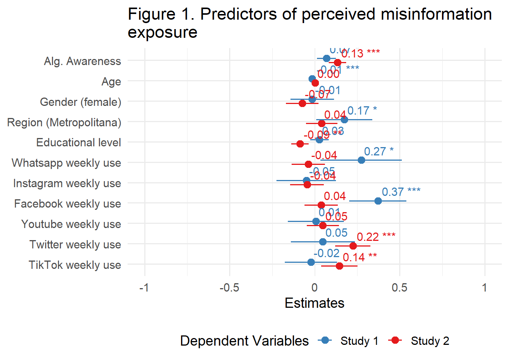
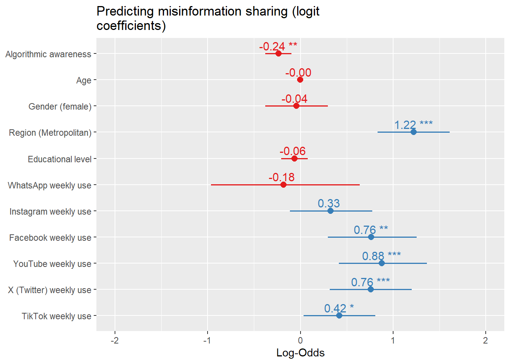
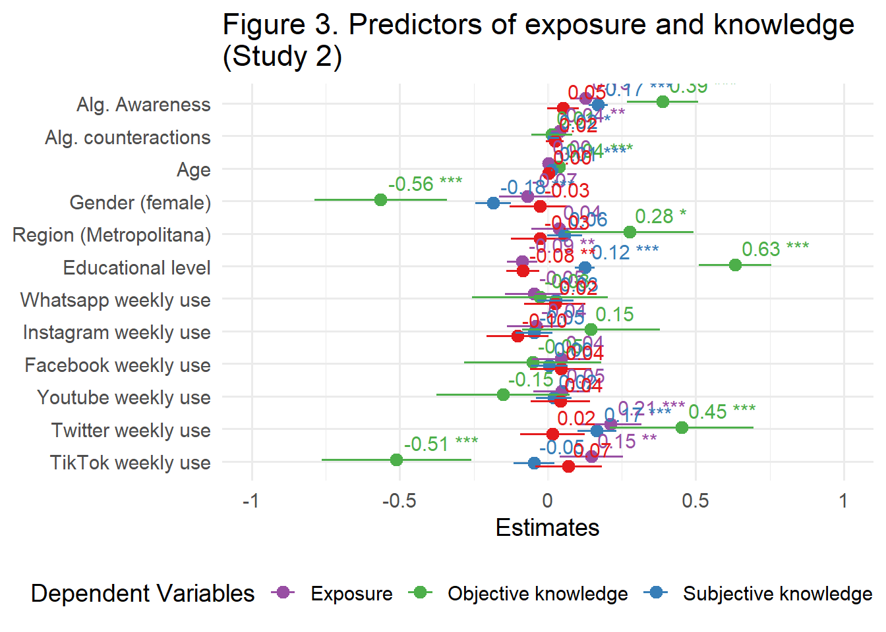

| Variable | Mean (SD)/Prop. | Min. | Max. | Cronbach’s Alpha | Missings (%) |
|---|---|---|---|---|---|
| Perceived misinformation exposure | 2.05 (1.09) | 1 | 5 | 5.75% | |
| Perceived misinformation sharing | 0.22 (0.42) | 0 | 1 | 6.25% | |
| Algorithmic Awareness | 2.62 (1.57) | 1 | 5 | 0.97 | 17.33% |
| Weekly Whatsapp use | 1: 958 0: 242 | 0 | 1 | 0% | |
| Weekly Instagram use | 1: 544 0: 656 | 0 | 1 | 0% | |
| Weekly Facebook use | 1: 743 0: 457 | 0 | 1 | 0% | |
| Weekly Youtube use | 1: 699 0: 501 | 0 | 1 | 0% | |
| Weekly Twitter use | 1: 157 0: 1043 | 0 | 1 | 0% | |
| Weekly Tiktok use | 1: 477 0: 723 | 0 | 1 | 0% | |
| Age (continuous) | 51.07 (18.6) | 14 | 96 | 0% | |
| Gender | Female: 511 Male: 689 | 0 | 1 | 0% | |
| Metropolitan region | Rm: 200 Other: 1000 | 0 | 1 | 0% | |
| Educational level | Primary education or less: 345 Incomplete secondary education: 164 Complete secondary education: 297 Post-secondary/technical education: 167 College education or more: 222 | 1 | 5 | 0.42% |
Table A1. Descriptive Statistics of Study 1 Variables.
Table A3. Summary Study 2 Variables.
| Variable | Mean (SD)/Prop. | Min. | Max. | Cronbach’s Alpha | Missings (%) |
|---|---|---|---|---|---|
| Perceived misinformation exposure | 3.54 (0.97) | 1 | 5.0 | 1.59% | |
| Perceived misinformation sharing | 0.28 (0.45) | 0 | 1.0 | 1.19% | |
| Objective news knowledge | 4.25 (0.93) | -6 | 6.0 | 0% | |
| Subjective news knowledge | 1.64 (1.64) | 1 | 5.0 | 0.72 | 0.62% |
| Overconfidence knowledge | 1.77 (0.97) | -3 | 3.5 | 0.8 | 0.62% |
| Algorithmic Awareness | 3.85 (0.97) | 1 | 5.0 | 27.28% | |
| Algorithmic actions/counteractions | -0.01 (0.97) | 0 | 5.0 | 0% | |
| Weekly Whatsapp use | 1: 978 0: 1286 | 0 | 1.0 | 0.04% | |
| Weekly Instagram use | 1: 1168 0: 1093 | 0 | 1.0 | 0.18% | |
| Weekly Facebook use | 1: 1236 0: 1027 | 0 | 1.0 | 0.09% | |
| Weekly Youtube use | 1: 831 0: 1433 | 0 | 1.0 | 0.04% | |
| Weekly Twitter use | 1: 480 0: 1781 | 0 | 1.0 | 0.18% | |
| Weekly Tiktok use | 1: 588 0: 1675 | 0 | 1.0 | 0.09% | |
| Age (continuous) | 46.57 (14.52) | 18 | 93.0 | 0% | |
| Gender | Female: 784 Male: 1481 | 0 | 1.0 | 0% | |
| Metropolitan region | Rm: 789 Other: 1476 | 0 | 1.0 | 0% | |
| Educational level | Primary education or less: 100 Incomplete secondary education: 104 Complete secondary education: 649 Post-secondary/technical education: 464 College education or more: 948 | 1 | 5.0 | 0% |
Table A2. Rural and Urban Algorithmic Literacy differences in Study 1.
| Area | N | Know Algorithmic Term | Algorithmic Awareness mean | Age Mean (sd) | Gender | Education |
|---|---|---|---|---|---|---|
| Rural | 449 | 109 (27.6) | 2.2 (p > 0.01) | 52 (19) | M: 184 (41%) / W: 265 (59%) | Basic education: 216 (48.2%); Middle school (complete): 97 (21.7%); Middle school (incomplete): 61 (13.6%); Technical higher education: 28 (6.2%); University / Postgraduate: 46 (10.3%) |
| Urban | 751 | 369 (53.9) | 2.8 | 50 (19) | M: 327 (43.5%) / W: 424 (56.5%) | Basic education: 129 (17.3%); Middle school (complete): 200 (26.8%); Middle school (incomplete): 103 (13.8%); Technical higher education: 139 (18.6%); University / Postgraduate: 176 (23.6%) |
Modelos
| Study 1 | Study 2 | |||
| Predictors | β | std. Error | β | std. Error |
| (Intercept) | 2.06 *** | 0.21 | 3.27 *** | 0.19 |
| Alg. Awareness | 0.07 * | 0.03 | 0.13 *** | 0.03 |
| Age | -0.01 *** | 0.00 | 0.00 | 0.00 |
| Gender (Women = 1) | -0.01 | 0.07 | -0.07 | 0.05 |
| Region (MR = 1) | 0.17 * | 0.08 | 0.04 | 0.05 |
| Educational level | 0.03 | 0.03 | -0.09 ** | 0.03 |
| Whatsapp weekly use | 0.27 * | 0.12 | -0.04 | 0.05 |
| Instagram weekly use | -0.05 | 0.09 | -0.04 | 0.05 |
| Facebook weekly use | 0.37 *** | 0.09 | 0.04 | 0.05 |
| Youtube weekly use | 0.01 | 0.08 | 0.05 | 0.05 |
| Twitter weekly use | 0.05 | 0.10 | 0.22 *** | 0.05 |
| TikTok weekly use | -0.02 | 0.08 | 0.14 ** | 0.05 |
| Observations | 954 | 1627 | ||
| R2 / R2 adjusted | 0.226 / 0.217 | 0.042 / 0.036 | ||
| * p<0.05 ** p<0.01 *** p<0.001 | ||||
| Study 1 | Study 2 | |||
| Predictors | β (Logit) | std. Error | β (Logit) | std. Error |
| (Intercept) | -2.01 *** | 0.59 | -1.96 *** | 0.47 |
| Alg. Awareness | -0.24 ** | 0.07 | 0.03 | 0.07 |
| Age | -0.00 | 0.01 | 0.01 | 0.00 |
| Gender (Women = 1) | -0.04 | 0.17 | -0.23 | 0.12 |
| Metropolitan Region | 1.22 *** | 0.20 | 0.03 | 0.12 |
| Educational level | -0.06 | 0.07 | 0.05 | 0.07 |
| Whatsapp weekly use | -0.18 | 0.41 | 0.00 | 0.12 |
| Instagram weekly use | 0.33 | 0.23 | 0.15 | 0.13 |
| Facebook weekly use | 0.76 ** | 0.24 | 0.30 * | 0.12 |
| Youtube weekly use | 0.88 *** | 0.24 | 0.11 | 0.12 |
| Twitter weekly use | 0.76 *** | 0.22 | 0.27 * | 0.13 |
| TikTok weekly use | 0.42 * | 0.20 | 0.30 * | 0.13 |
| Observations | 948 | 1631 | ||
| R2 Tjur | 0.147 | 0.021 | ||
| * p<0.05 ** p<0.01 *** p<0.001 | ||||
Table 2. OLS Models for Study 2
| Perceived Misinformation Exposure | Objective news knowledge | Subjective news knowledge | Knowledge overconfidence | |||||
| Predictors | β | std. Error | β | std. Error | β | std. Error | β | std. Error |
| (Intercept) | 3.21 *** | 0.19 | -3.52 *** | 0.44 | 2.07 *** | 0.12 | -0.12 | 0.20 |
| Alg. Awareness | 0.13 *** | 0.03 | 0.39 *** | 0.06 | 0.17 *** | 0.02 | 0.05 | 0.03 |
| Alg. counteractions | 0.04 ** | 0.01 | 0.01 | 0.03 | 0.02 * | 0.01 | 0.02 | 0.02 |
| Age | 0.00 | 0.00 | 0.04 *** | 0.00 | 0.01 *** | 0.00 | 0.00 | 0.00 |
| Gender (Women = 1) | -0.07 | 0.05 | -0.56 *** | 0.11 | -0.18 *** | 0.03 | -0.03 | 0.05 |
| Metropolitan Region | 0.04 | 0.05 | 0.28 * | 0.11 | 0.06 | 0.03 | -0.03 | 0.05 |
| Educational level | -0.09 ** | 0.03 | 0.63 *** | 0.06 | 0.12 *** | 0.02 | -0.08 ** | 0.03 |
| Whatsapp weekly use | -0.05 | 0.05 | -0.03 | 0.12 | 0.03 | 0.03 | 0.02 | 0.05 |
| Instagram weekly use | -0.04 | 0.05 | 0.15 | 0.12 | -0.05 | 0.03 | -0.10 | 0.05 |
| Facebook weekly use | 0.04 | 0.05 | -0.05 | 0.12 | 0.00 | 0.03 | 0.04 | 0.05 |
| Youtube weekly use | 0.05 | 0.05 | -0.15 | 0.11 | 0.02 | 0.03 | 0.04 | 0.05 |
| Twitter weekly use | 0.21 *** | 0.05 | 0.45 *** | 0.12 | 0.17 *** | 0.03 | 0.02 | 0.06 |
| TikTok weekly use | 0.15 ** | 0.05 | -0.51 *** | 0.13 | -0.05 | 0.03 | 0.07 | 0.06 |
| Observations | 1627 | 1644 | 1644 | 1644 | ||||
| R2 / R2 adjusted | 0.047 / 0.040 | 0.231 / 0.225 | 0.284 / 0.278 | 0.016 / 0.009 | ||||
| * p<0.05 ** p<0.01 *** p<0.001 | ||||||||
Plot Models



Appendix
Table A4. Comparative models study 1 (Filter Alg. Lit.)
| Exposure: Original | Exposure: Alg == 1 | Sharing: Original | Sharing: Alg == 1 | |
| Predictors | β (OLS/Logit) | β (OLS/Logit) | β (OLS/Logit) | β (OLS/Logit) |
| (Intercept) | 2.06 *** | 2.20 *** | -2.01 *** | -1.09 |
| Alg. Awareness | 0.07 * | 0.04 | -0.24 ** | -0.33 *** |
| Age | -0.01 *** | -0.01 *** | -0.00 | 0.01 |
| Gender (Women = 1) | -0.01 | -0.05 | -0.04 | 0.08 |
| Region (MR = 1) | 0.17 * | 0.27 ** | 1.22 *** | 1.38 *** |
| Educational level | 0.03 | 0.03 | -0.06 | -0.11 |
| Whatsapp weekly use | 0.27 * | 0.39 | -0.18 | -0.83 |
| Instagram weekly use | -0.05 | -0.10 | 0.33 | 0.26 |
| Facebook weekly use | 0.37 *** | 0.42 *** | 0.76 ** | 0.72 * |
| Youtube weekly use | 0.01 | -0.10 | 0.88 *** | 0.83 ** |
| Twitter weekly use | 0.05 | 0.17 | 0.76 *** | 1.08 *** |
| TikTok weekly use | -0.02 | -0.25 * | 0.42 * | 0.17 |
| Observations | 954 | 553 | 948 | 546 |
| R2 / R2 adjusted | 0.226 / 0.217 | 0.084 / 0.066 | 0.147 | 0.164 |
| * p<0.05 ** p<0.01 *** p<0.001 | ||||
Table 3. Multinomial model for Sharing Misinformation in Study 2
| Sharing Study 2 Categorical (Multinomial) | |||
| Predictors | Odds Ratios | std. Error | Response |
| (Intercept) | 0.13 *** | 0.06 | Sí, pero después descubrí que era contenido falso |
| alg_aware | 1.00 | 0.07 | Sí, pero después descubrí que era contenido falso |
| counteract_algorithm | 1.04 | 0.04 | Sí, pero después descubrí que era contenido falso |
| age | 1.01 | 0.00 | Sí, pero después descubrí que era contenido falso |
| genderWomen | 0.86 | 0.11 | Sí, pero después descubrí que era contenido falso |
| rmRegión Metropolitana | 1.04 | 0.12 | Sí, pero después descubrí que era contenido falso |
| educ_level | 1.07 | 0.07 | Sí, pero después descubrí que era contenido falso |
| wsp | 0.94 | 0.12 | Sí, pero después descubrí que era contenido falso |
| ig | 1.13 | 0.15 | Sí, pero después descubrí que era contenido falso |
| fb | 1.40 ** | 0.18 | Sí, pero después descubrí que era contenido falso |
| yt | 1.11 | 0.14 | Sí, pero después descubrí que era contenido falso |
| tw | 1.34 * | 0.17 | Sí, pero después descubrí que era contenido falso |
| tiktok | 1.29 | 0.17 | Sí, pero después descubrí que era contenido falso |
| (Intercept) | 0.00 *** | 0.00 | Sí, y lo hice sabiendo que era contenido falso |
| alg_aware | 1.62 | 0.48 | Sí, y lo hice sabiendo que era contenido falso |
| counteract_algorithm | 1.05 | 0.13 | Sí, y lo hice sabiendo que era contenido falso |
| age | 1.01 | 0.02 | Sí, y lo hice sabiendo que era contenido falso |
| genderWomen | 0.28 ** | 0.12 | Sí, y lo hice sabiendo que era contenido falso |
| rmRegión Metropolitana | 0.98 | 0.40 | Sí, y lo hice sabiendo que era contenido falso |
| educ_level | 0.88 | 0.20 | Sí, y lo hice sabiendo que era contenido falso |
| wsp | 2.25 | 0.97 | Sí, y lo hice sabiendo que era contenido falso |
| ig | 2.11 | 0.98 | Sí, y lo hice sabiendo que era contenido falso |
| fb | 0.84 | 0.36 | Sí, y lo hice sabiendo que era contenido falso |
| yt | 1.33 | 0.53 | Sí, y lo hice sabiendo que era contenido falso |
| tw | 0.67 | 0.31 | Sí, y lo hice sabiendo que era contenido falso |
| tiktok | 2.86 * | 1.16 | Sí, y lo hice sabiendo que era contenido falso |
| Observations | 1631 | ||
| R2 / R2 adjusted | 0.295 / 0.295 | ||
| * p<0.05 ** p<0.01 *** p<0.001 | |||
Objective Knowledge recodification
| P39 Correct vs Not | P41 Correct vs Not | P43 Correct vs Not | P45 Correct vs Not | P47 Correct vs Not | P49 Correct vs Not | |||||||
| Predictors | Odds Ratios | std. Error | Odds Ratios | std. Error | Odds Ratios | std. Error | Odds Ratios | std. Error | Odds Ratios | std. Error | Odds Ratios | std. Error |
| (Intercept) | 0.10 *** | 0.05 | 0.02 *** | 0.01 | 0.00 *** | 0.00 | 0.05 *** | 0.02 | 0.16 *** | 0.07 | 0.74 | 0.31 |
| Alg. Awareness | 1.37 *** | 0.09 | 1.30 *** | 0.08 | 1.34 *** | 0.09 | 1.36 *** | 0.09 | 1.20 ** | 0.07 | 1.04 | 0.06 |
| Age | 1.02 *** | 0.00 | 1.03 *** | 0.00 | 1.04 *** | 0.00 | 1.04 *** | 0.00 | 1.01 ** | 0.00 | 1.00 | 0.00 |
| Gender (Women = 1) | 0.74 * | 0.10 | 0.59 *** | 0.07 | 1.43 ** | 0.17 | 0.41 *** | 0.05 | 0.59 *** | 0.07 | 1.11 | 0.12 |
| Region (MR = 1) | 1.21 | 0.15 | 1.16 | 0.13 | 1.26 * | 0.15 | 1.01 | 0.12 | 1.06 | 0.12 | 1.19 | 0.13 |
| Educational level | 1.29 *** | 0.08 | 1.49 *** | 0.09 | 1.93 *** | 0.13 | 1.36 *** | 0.09 | 1.32 *** | 0.08 | 1.06 | 0.06 |
| Whatsapp weekly use | 1.01 | 0.13 | 0.98 | 0.12 | 1.03 | 0.13 | 0.79 | 0.10 | 1.32 * | 0.16 | 1.01 | 0.11 |
| Instagram weekly use | 1.24 | 0.16 | 0.92 | 0.11 | 1.04 | 0.13 | 0.94 | 0.12 | 0.97 | 0.12 | 1.26 * | 0.14 |
| Facebook weekly use | 0.88 | 0.11 | 0.87 | 0.10 | 0.86 | 0.10 | 1.06 | 0.13 | 0.94 | 0.11 | 1.13 | 0.13 |
| Youtube weekly use | 0.83 | 0.11 | 1.16 | 0.14 | 1.02 | 0.12 | 0.96 | 0.12 | 1.15 | 0.13 | 0.82 | 0.09 |
| Twitter weekly use | 1.69 *** | 0.25 | 1.34 * | 0.17 | 1.72 *** | 0.23 | 1.64 *** | 0.22 | 1.07 | 0.13 | 0.89 | 0.11 |
| TikTok weekly use | 0.98 | 0.14 | 0.80 | 0.11 | 0.72 * | 0.10 | 0.87 | 0.12 | 0.84 | 0.11 | 0.89 | 0.11 |
| Observations | 1644 | 1644 | 1644 | 1644 | 1644 | 1644 | ||||||
| R2 Tjur | 0.080 | 0.144 | 0.174 | 0.157 | 0.071 | 0.010 | ||||||
| * p<0.05 ** p<0.01 *** p<0.001 | ||||||||||||
| P39 Objective knowledge | |||
| Predictors | Odds Ratios | std. Error | Response |
| (Intercept) | 6.38 *** | 3.41 | Don't know |
| alg_aware | 0.70 *** | 0.05 | Don't know |
| age | 0.98 ** | 0.01 | Don't know |
| gender | 1.28 | 0.19 | Don't know |
| rm | 0.80 | 0.11 | Don't know |
| educ_level | 0.80 ** | 0.06 | Don't know |
| wsp | 0.89 | 0.13 | Don't know |
| ig | 0.77 | 0.11 | Don't know |
| fb | 1.17 | 0.17 | Don't know |
| yt | 1.28 | 0.18 | Don't know |
| tw | 0.52 *** | 0.09 | Don't know |
| tiktok | 1.02 | 0.16 | Don't know |
| (Intercept) | 3.00 | 2.30 | Incorrect |
| alg_aware | 0.83 | 0.09 | Incorrect |
| age | 0.97 *** | 0.01 | Incorrect |
| gender | 1.53 * | 0.33 | Incorrect |
| rm | 0.89 | 0.18 | Incorrect |
| educ_level | 0.73 ** | 0.08 | Incorrect |
| wsp | 1.25 | 0.25 | Incorrect |
| ig | 0.88 | 0.18 | Incorrect |
| fb | 1.10 | 0.23 | Incorrect |
| yt | 1.04 | 0.21 | Incorrect |
| tw | 0.77 | 0.17 | Incorrect |
| tiktok | 1.02 | 0.22 | Incorrect |
| Observations | 1644 | ||
| R2 / R2 adjusted | 0.403 / 0.402 | ||
| * p<0.05 ** p<0.01 *** p<0.001 | |||
| P41 Objective knowledge | |||
| Predictors | Odds Ratios | std. Error | Response |
| (Intercept) | 38.20 *** | 23.71 | Don't know |
| alg_aware | 0.79 ** | 0.07 | Don't know |
| age | 0.95 *** | 0.01 | Don't know |
| gender | 1.87 *** | 0.30 | Don't know |
| rm | 0.97 | 0.15 | Don't know |
| educ_level | 0.62 *** | 0.05 | Don't know |
| wsp | 0.95 | 0.15 | Don't know |
| ig | 1.28 | 0.21 | Don't know |
| fb | 1.26 | 0.20 | Don't know |
| yt | 0.77 | 0.12 | Don't know |
| tw | 0.79 | 0.14 | Don't know |
| tiktok | 0.85 | 0.15 | Don't know |
| (Intercept) | 14.93 *** | 7.66 | Incorrect |
| alg_aware | 0.76 *** | 0.05 | Incorrect |
| age | 0.98 *** | 0.00 | Incorrect |
| gender | 1.60 *** | 0.21 | Incorrect |
| rm | 0.81 | 0.10 | Incorrect |
| educ_level | 0.70 *** | 0.05 | Incorrect |
| wsp | 1.06 | 0.14 | Incorrect |
| ig | 0.99 | 0.13 | Incorrect |
| fb | 1.11 | 0.15 | Incorrect |
| yt | 0.91 | 0.12 | Incorrect |
| tw | 0.73 * | 0.11 | Incorrect |
| tiktok | 1.53 ** | 0.22 | Incorrect |
| Observations | 1644 | ||
| R2 / R2 adjusted | 0.370 / 0.370 | ||
| * p<0.05 ** p<0.01 *** p<0.001 | |||
| P43 Objective knowledge | |||
| Predictors | Odds Ratios | std. Error | Response |
| (Intercept) | 460.40 *** | 316.63 | Don't know |
| alg_aware | 0.68 *** | 0.06 | Don't know |
| age | 0.95 *** | 0.01 | Don't know |
| gender | 0.42 *** | 0.07 | Don't know |
| rm | 0.77 | 0.13 | Don't know |
| educ_level | 0.51 *** | 0.05 | Don't know |
| wsp | 1.11 | 0.19 | Don't know |
| ig | 0.94 | 0.17 | Don't know |
| fb | 1.06 | 0.18 | Don't know |
| yt | 0.80 | 0.14 | Don't know |
| tw | 0.49 *** | 0.10 | Don't know |
| tiktok | 1.22 | 0.23 | Don't know |
| (Intercept) | 92.99 *** | 50.14 | Incorrect |
| alg_aware | 0.78 *** | 0.06 | Incorrect |
| age | 0.97 *** | 0.00 | Incorrect |
| gender | 0.89 | 0.12 | Incorrect |
| rm | 0.80 | 0.10 | Incorrect |
| educ_level | 0.52 *** | 0.04 | Incorrect |
| wsp | 0.91 | 0.12 | Incorrect |
| ig | 0.97 | 0.13 | Incorrect |
| fb | 1.22 | 0.17 | Incorrect |
| yt | 1.07 | 0.14 | Incorrect |
| tw | 0.62 ** | 0.09 | Incorrect |
| tiktok | 1.47 ** | 0.21 | Incorrect |
| Observations | 1644 | ||
| R2 / R2 adjusted | 0.393 / 0.393 | ||
| * p<0.05 ** p<0.01 *** p<0.001 | |||
| P45 Objective knowledge | |||
| Predictors | Odds Ratios | std. Error | Response |
| (Intercept) | 27.55 *** | 16.63 | Don't know |
| alg_aware | 0.70 *** | 0.06 | Don't know |
| age | 0.96 *** | 0.01 | Don't know |
| gender | 2.52 *** | 0.43 | Don't know |
| rm | 0.95 | 0.15 | Don't know |
| educ_level | 0.66 *** | 0.05 | Don't know |
| wsp | 1.04 | 0.17 | Don't know |
| ig | 1.00 | 0.16 | Don't know |
| fb | 1.24 | 0.20 | Don't know |
| yt | 0.82 | 0.13 | Don't know |
| tw | 0.61 ** | 0.11 | Don't know |
| tiktok | 0.95 | 0.17 | Don't know |
| (Intercept) | 4.21 * | 2.38 | Incorrect |
| alg_aware | 0.78 ** | 0.06 | Incorrect |
| age | 0.97 *** | 0.01 | Incorrect |
| gender | 2.36 *** | 0.36 | Incorrect |
| rm | 1.03 | 0.15 | Incorrect |
| educ_level | 0.80 ** | 0.06 | Incorrect |
| wsp | 1.49 ** | 0.22 | Incorrect |
| ig | 1.11 | 0.17 | Incorrect |
| fb | 0.76 | 0.12 | Incorrect |
| yt | 1.25 | 0.18 | Incorrect |
| tw | 0.61 ** | 0.10 | Incorrect |
| tiktok | 1.33 | 0.21 | Incorrect |
| Observations | 1644 | ||
| R2 / R2 adjusted | 0.410 / 0.410 | ||
| * p<0.05 ** p<0.01 *** p<0.001 | |||
| P47 Objective knowledge | |||
| Predictors | Odds Ratios | std. Error | Response |
| (Intercept) | 6.43 *** | 3.28 | Don't know |
| alg_aware | 0.76 *** | 0.05 | Don't know |
| age | 0.98 ** | 0.01 | Don't know |
| gender | 1.95 *** | 0.27 | Don't know |
| rm | 0.94 | 0.12 | Don't know |
| educ_level | 0.76 *** | 0.05 | Don't know |
| wsp | 0.79 | 0.11 | Don't know |
| ig | 1.12 | 0.16 | Don't know |
| fb | 1.03 | 0.14 | Don't know |
| yt | 0.70 * | 0.10 | Don't know |
| tw | 0.83 | 0.13 | Don't know |
| tiktok | 0.99 | 0.15 | Don't know |
| (Intercept) | 0.95 | 0.58 | Incorrect |
| alg_aware | 0.97 | 0.08 | Incorrect |
| age | 0.99 | 0.01 | Incorrect |
| gender | 1.40 * | 0.22 | Incorrect |
| rm | 0.96 | 0.15 | Incorrect |
| educ_level | 0.75 *** | 0.06 | Incorrect |
| wsp | 0.71 * | 0.12 | Incorrect |
| ig | 0.91 | 0.15 | Incorrect |
| fb | 1.13 | 0.19 | Incorrect |
| yt | 1.19 | 0.19 | Incorrect |
| tw | 1.11 | 0.19 | Incorrect |
| tiktok | 1.54 * | 0.26 | Incorrect |
| Observations | 1644 | ||
| R2 / R2 adjusted | 0.349 / 0.348 | ||
| * p<0.05 ** p<0.01 *** p<0.001 | |||
| P49 Objective knowledge | |||
| Predictors | Odds Ratios | std. Error | Response |
| (Intercept) | 4.80 | 10.46 | Don't know |
| alg_aware | 0.72 | 0.21 | Don't know |
| age | 0.95 | 0.02 | Don't know |
| gender | 0.33 | 0.19 | Don't know |
| rm | 0.72 | 0.44 | Don't know |
| educ_level | 0.59 | 0.17 | Don't know |
| wsp | 0.36 | 0.22 | Don't know |
| ig | 0.58 | 0.34 | Don't know |
| fb | 1.17 | 0.73 | Don't know |
| yt | 6.88 ** | 4.37 | Don't know |
| tw | 0.18 | 0.19 | Don't know |
| tiktok | 1.85 | 1.05 | Don't know |
| (Intercept) | 1.19 | 0.51 | Incorrect |
| alg_aware | 0.97 | 0.06 | Incorrect |
| age | 1.00 | 0.00 | Incorrect |
| gender | 0.92 | 0.10 | Incorrect |
| rm | 0.84 | 0.09 | Incorrect |
| educ_level | 0.96 | 0.06 | Incorrect |
| wsp | 1.01 | 0.11 | Incorrect |
| ig | 0.80 | 0.09 | Incorrect |
| fb | 0.88 | 0.10 | Incorrect |
| yt | 1.17 | 0.13 | Incorrect |
| tw | 1.14 | 0.14 | Incorrect |
| tiktok | 1.11 | 0.14 | Incorrect |
| Observations | 1644 | ||
| R2 / R2 adjusted | 0.334 / 0.333 | ||
| * p<0.05 ** p<0.01 *** p<0.001 | |||
Table study 1
| Exposure | Sharing | |||
| Predictors | β | std. Error | β | std. Error |
| (Intercept) | 2.06 *** | 0.21 | 1.29 *** | 0.15 |
| Alg. Awareness | 0.07 * | 0.03 | -0.07 *** | 0.02 |
| Age | -0.01 *** | 0.00 | -0.00 | 0.00 |
| Gender (Women = 1) | -0.01 | 0.07 | -0.00 | 0.05 |
| Region (MR = 1) | 0.17 * | 0.08 | 0.44 *** | 0.06 |
| Educational level | 0.03 | 0.03 | -0.03 | 0.02 |
| Whatsapp weekly use | 0.27 * | 0.12 | -0.10 | 0.09 |
| Instagram weekly use | -0.05 | 0.09 | 0.04 | 0.06 |
| Facebook weekly use | 0.37 *** | 0.09 | 0.23 *** | 0.06 |
| Youtube weekly use | 0.01 | 0.08 | 0.17 ** | 0.06 |
| Twitter weekly use | 0.05 | 0.10 | 0.32 *** | 0.07 |
| TikTok weekly use | -0.02 | 0.08 | 0.14 * | 0.06 |
| Observations | 954 | 948 | ||
| R2 / R2 adjusted | 0.226 / 0.217 | 0.141 / 0.131 | ||
| * p<0.05 ** p<0.01 *** p<0.001 | ||||
Table Study 2
| Perceived Misinformation Exposure | Objective news knowledge | Subjective news knowledge | Knowledge overconfidence | |||||
| Predictors | β | std. Error | β | std. Error | β | std. Error | β | std. Error |
| (Intercept) | 3.21 *** | 0.19 | -3.52 *** | 0.44 | 2.07 *** | 0.12 | -0.12 | 0.20 |
| Alg. Awareness | 0.13 *** | 0.03 | 0.39 *** | 0.06 | 0.17 *** | 0.02 | 0.05 | 0.03 |
| Alg. counteractions | 0.04 ** | 0.01 | 0.01 | 0.03 | 0.02 * | 0.01 | 0.02 | 0.02 |
| Age | 0.00 | 0.00 | 0.04 *** | 0.00 | 0.01 *** | 0.00 | 0.00 | 0.00 |
| Gender (Women = 1) | -0.07 | 0.05 | -0.56 *** | 0.11 | -0.18 *** | 0.03 | -0.03 | 0.05 |
| Metropolitan Region | 0.04 | 0.05 | 0.28 * | 0.11 | 0.06 | 0.03 | -0.03 | 0.05 |
| Educational level | -0.09 ** | 0.03 | 0.63 *** | 0.06 | 0.12 *** | 0.02 | -0.08 ** | 0.03 |
| Whatsapp weekly use | -0.05 | 0.05 | -0.03 | 0.12 | 0.03 | 0.03 | 0.02 | 0.05 |
| Instagram weekly use | -0.04 | 0.05 | 0.15 | 0.12 | -0.05 | 0.03 | -0.10 | 0.05 |
| Facebook weekly use | 0.04 | 0.05 | -0.05 | 0.12 | 0.00 | 0.03 | 0.04 | 0.05 |
| Youtube weekly use | 0.05 | 0.05 | -0.15 | 0.11 | 0.02 | 0.03 | 0.04 | 0.05 |
| Twitter weekly use | 0.21 *** | 0.05 | 0.45 *** | 0.12 | 0.17 *** | 0.03 | 0.02 | 0.06 |
| TikTok weekly use | 0.15 ** | 0.05 | -0.51 *** | 0.13 | -0.05 | 0.03 | 0.07 | 0.06 |
| Observations | 1627 | 1644 | 1644 | 1644 | ||||
| R2 / R2 adjusted | 0.047 / 0.040 | 0.231 / 0.225 | 0.284 / 0.278 | 0.016 / 0.009 | ||||
| * p<0.05 ** p<0.01 *** p<0.001 | ||||||||
Table Sharing study 2
| Sharing Missinformation | |||
| Predictors | β (Logit) | std. Error | Response |
| (Intercept) | -2.07 *** | 0.48 | Sí, pero después descubrí que era contenido falso |
| Alg. Awareness | -0.00 | 0.07 | Sí, pero después descubrí que era contenido falso |
| Alg. counteractions | 0.04 | 0.04 | Sí, pero después descubrí que era contenido falso |
| Knowledge Miscalibration | -0.02 | 0.06 | Sí, pero después descubrí que era contenido falso |
| Age | 0.01 | 0.00 | Sí, pero después descubrí que era contenido falso |
| Gender (Women = 1) | -0.16 | 0.12 | Sí, pero después descubrí que era contenido falso |
| Metropolitan Region | 0.03 | 0.12 | Sí, pero después descubrí que era contenido falso |
| Educational level | 0.06 | 0.07 | Sí, pero después descubrí que era contenido falso |
| Whatsapp weekly use | -0.06 | 0.13 | Sí, pero después descubrí que era contenido falso |
| Instagram weekly use | 0.12 | 0.13 | Sí, pero después descubrí que era contenido falso |
| Facebook weekly use | 0.34 ** | 0.13 | Sí, pero después descubrí que era contenido falso |
| Youtube weekly use | 0.10 | 0.12 | Sí, pero después descubrí que era contenido falso |
| Twitter weekly use | 0.29 * | 0.13 | Sí, pero después descubrí que era contenido falso |
| TikTok weekly use | 0.25 | 0.14 | Sí, pero después descubrí que era contenido falso |
| (Intercept) | -6.41 *** | 1.84 | Sí, y lo hice sabiendo que era contenido falso |
| Alg. Awareness | 0.46 | 0.29 | Sí, y lo hice sabiendo que era contenido falso |
| Alg. counteractions | 0.04 | 0.13 | Sí, y lo hice sabiendo que era contenido falso |
| Knowledge Miscalibration | 0.21 | 0.21 | Sí, y lo hice sabiendo que era contenido falso |
| Age | 0.01 | 0.02 | Sí, y lo hice sabiendo que era contenido falso |
| Gender (Women = 1) | -1.26 ** | 0.43 | Sí, y lo hice sabiendo que era contenido falso |
| Metropolitan Region | -0.00 | 0.40 | Sí, y lo hice sabiendo que era contenido falso |
| Educational level | -0.11 | 0.23 | Sí, y lo hice sabiendo que era contenido falso |
| Whatsapp weekly use | 0.81 | 0.43 | Sí, y lo hice sabiendo que era contenido falso |
| Instagram weekly use | 0.78 | 0.47 | Sí, y lo hice sabiendo que era contenido falso |
| Facebook weekly use | -0.17 | 0.42 | Sí, y lo hice sabiendo que era contenido falso |
| Youtube weekly use | 0.28 | 0.40 | Sí, y lo hice sabiendo que era contenido falso |
| Twitter weekly use | -0.43 | 0.46 | Sí, y lo hice sabiendo que era contenido falso |
| TikTok weekly use | 1.03 * | 0.41 | Sí, y lo hice sabiendo que era contenido falso |
| Observations | 1631 | ||
| R2 / R2 adjusted | 0.296 / 0.295 | ||
| * p<0.05 ** p<0.01 *** p<0.001 | |||